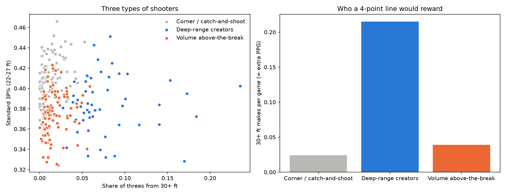

NBA Four-Point Line In progress
A Data Science Club team of five using multi-season NBA shooting data to find where a four-point line should sit, and how it would change player performance and style of play.
Counted as 4 past a 27-foot line, shots at 6 of 7 distances would beat an average three.
← and → move between points. Esc hides the label.
Show the numbers
| Distance | Made | Attempted | 3-point % (95% CI) | Pts as a 3 | Pts as a 4 |
|---|---|---|---|---|---|
| 22 ft | 2,990 | 7,101 | 42.1% ± 1.1 | 1.26 | – |
| 23 ft | 5,639 | 13,307 | 42.4% ± 0.8 | 1.27 | – |
| 24 ft | 6,425 | 16,178 | 39.7% ± 0.8 | 1.19 | – |
| 25 ft | 13,544 | 35,132 | 38.6% ± 0.5 | 1.16 | – |
| 26 ft | 10,611 | 28,183 | 37.7% ± 0.6 | 1.13 | – |
| 27 ft | 5,160 | 14,114 | 36.6% ± 0.8 | 1.10 | 1.46 |
| 28 ft | 2,362 | 6,581 | 35.9% ± 1.2 | 1.08 | 1.44 |
| 29 ft | 1,157 | 3,468 | 33.4% ± 1.6 | 1.00 | 1.33 |
| 30 ft | 581 | 1,875 | 31.0% ± 2.1 | 0.93 | 1.24 |
| 31 ft | 280 | 981 | 28.5% ± 2.8 | 0.86 | 1.14 |
| 32 ft | 183 | 548 | 33.4% ± 3.9 | 1.00 | 1.34 |
| 33 ft | 96 | 309 | 31.1% ± 5.2 | 0.93 | 1.24 |
01The question
What could a four-point line look like in the NBA? Our team in UIUC's Data Science Club is exploring that with real shooting data.
02What I built
- I built the team's expected-points analysis: at every distance, the make rate times what the shot is worth, as a 3 and as a 4 past a proposed line at 27 feet. Most deep shots worth 4 would beat an average three, which is the case for a line there. The chart above redraws it.
- I built a k-means model that sorts 250 player-seasons into three shooter types: corner / catch-and-shoot, volume above-the-break, and deep-range creators. A 4-point line would mostly reward the deep-range creators, at about 0.2 extra points per game from 30+ ft makes against under 0.05 for the other two types.
- I helped define what our Monte Carlo simulation would model (a teammate implemented it). The simulation is validated by backtesting on the 2024-25 and 2025-26 seasons.
- The team's dataset covers the top 50 three-point makers in each season from 2021-22 to 2025-26. It gives makes and attempts at every distance, foot by foot from the arc out to 40+ ft, plus distance-bucket summaries for each player.
- Now I'm helping build the presentation of our findings for the club board.


03Key techniques
- Expected points per shot
- Make rate times point value at every foot, as a 3 and as a 4, compared with the average three.
- k-means clustering
- Grouping player-seasons into shooter types, then measuring who a 4-point line would reward.
- Monte Carlo simulation
- Helped scope what the team's simulation models, and its backtest on the 2024-25 and 2025-26 seasons.
04What I learned
On a team of five, splitting the work cleanly matters: agreeing on exactly what the simulation should model let a teammate build it while I worked on expected points and shooter types. The data also taught me to respect sample size: very few shots come from 30+ feet, so the confidence intervals there are wide and any four-point estimate that far out needs care.